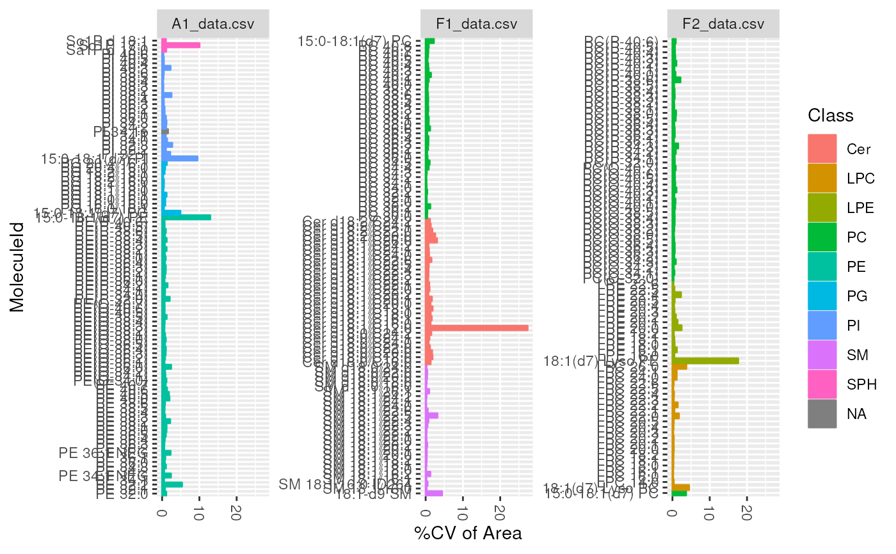
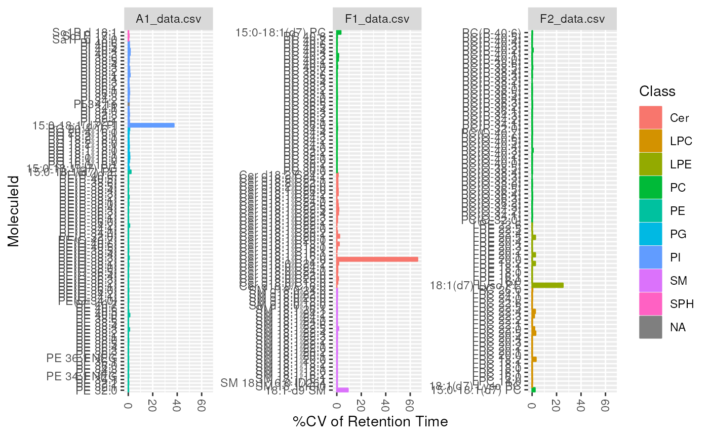
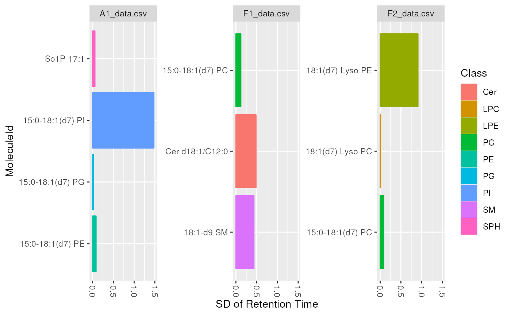
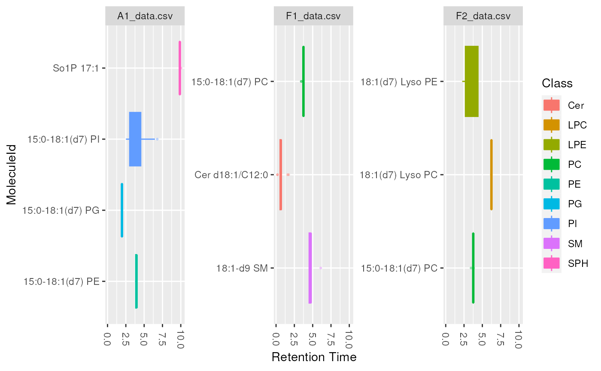

lipidr supports three types of plots for to visualize at lipid molecules.
cv plots a bar chart for coefficient of variation of lipid molecules. This
plot type is usually used to investigate the CV in lipid intensity or
retention time, in QC samples.
sd plots a bar chart for standard deviations of a certain measure in each
lipid. This plot type is usually used to look at standard deviation of
intensity for each lipid, but can also be used to look at different
measures such as Retention Time, to ensure all lipids elute within
expected range.
boxplot plots a boxplot chart to examine the distribution of values per
lipid. This plot type is usually used to look at intensity distribution
for each lipid, but can also be used to look at different measures, such as
Retention Time or Background.
plot_molecules( data, type = c("cv", "sd", "boxplot"), measure = "Area", log = TRUE, color = "Class" )
Arguments
| data | LipidomicsExperiment object. |
|---|---|
| type | plot type, either |
| measure | Which measure to plot the distribution of: usually Area,
Area Normalized or Height. Default is |
| log | Whether values should be log2 transformed
(Set FALSE for retention time). Default is |
| color | The column name of a row annotation to be used as color |
Value
A ggplot object.
Examples
data(data_normalized) d_qc <- data_normalized[, data_normalized$group == "QC"] # plot the variation in intensity and retention time of all measured # lipids in QC samples plot_molecules(d_qc, "cv", "Area")#> Warning: `fun.y` is deprecated. Use `fun` instead.plot_molecules(d_qc, "cv", "Retention Time", log = FALSE)#> Warning: `fun.y` is deprecated. Use `fun` instead.#> Warning: Removed 1 rows containing non-finite values (stat_summary).# plot the variation in intensity, RT of ISTD (internal standards) # in QC samples d_istd_qc <- data_normalized[ rowData(data_normalized)$istd, data_normalized$group == "QC" ] plot_molecules(d_istd_qc, "sd", "Area")#> Warning: `fun.y` is deprecated. Use `fun` instead.plot_molecules(d_istd_qc, "sd", "Retention Time", log = FALSE)#> Warning: `fun.y` is deprecated. Use `fun` instead.#> Warning: Removed 1 rows containing non-finite values (stat_summary).plot_molecules(d_istd_qc, "boxplot")plot_molecules(d_istd_qc, "boxplot", "Retention Time", log = FALSE)#> Warning: Removed 1 rows containing non-finite values (stat_boxplot).